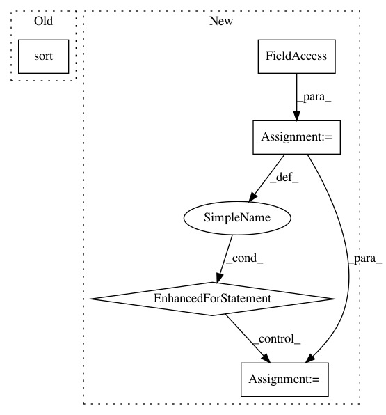

f4beaac559e00a3676d942dc7e8fea69efc01cfe,catalyst/metrics/hitrate.py,,hitrate,#,8
Before Change
k = min(outputs.size(1), k)
_, indices_for_sort = outputs.sort(descending=True, dim=-1)
true_sorted_by_preds = torch.gather(
targets, dim=-1, index=indices_for_sort
)
true_sorted_by_pred_shrink = true_sorted_by_preds[:, :k]
After Change
results = []
targets_sort_by_outputs = process_recsys_components(outputs, targets)
for k in topk:
k = min(outputs.size(1), k)
hits_score = torch.sum(targets_sort_by_outputs[:, :k], dim=1) / k
results.append(torch.mean(hits_score))
return results
__all__ = ["hitrate"]
In pattern: SUPERPATTERN
Frequency: 3
Non-data size: 5
Instances
Project Name: Scitator/catalyst
Commit Name: f4beaac559e00a3676d942dc7e8fea69efc01cfe
Time: 2020-11-30
Author: raveforlive@gmail.com
File Name: catalyst/metrics/hitrate.py
Class Name:
Method Name: hitrate
Project Name: ANTsX/ANTsPy
Commit Name: 6286ba014120ce05b49302007a0a28feed6d98c4
Time: 2020-09-10
Author: stnava@gmail.com
File Name: ants/segmentation/joint_label_fusion.py
Class Name:
Method Name: joint_label_fusion
Project Name: nilmtk/nilmtk
Commit Name: f74a4a251d395b3e175f99845b01ece0e50a79c3
Time: 2014-08-24
Author: nipunreddevil@gmail.com
File Name: nilmtk/metergroup.py
Class Name: MeterGroup
Method Name: select_top_k